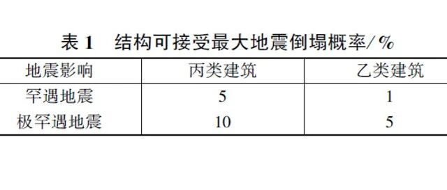

转载：抗震性能化专题Ⅶ | 陆新征等，建筑结构防地震倒塌性能设计
以下文章来源于建筑结构 ，作者陆新征等
《建筑结构》创刊于1971年，是中文核心期刊，建设部优秀科技期刊。主要栏目包括混凝土结构、钢结构、空间结构、组合结构、地基与基础等方面的结构设计经验以及工程抗震、减隔震等相关问题的交流与讨论。内容以实用性、科学性、导向性和资料信息性为特色。
《建筑结构抗震性能化设计标准》(T/CECA 20024—2022)历时两年编制而成，已于2022年10月24发布，于2022年12月1日实施。本标准吸收了国内相关规范中成熟有效的相关内容，同时也结合国内外抗震性能化设计的发展和成功经验对原有设计方法进行了较大幅度的调整和完善，如采用“两水准两阶段”的抗震性能化设计方法；允许在抗震性能化设计时对部分指标适当放松等，可以为建设单位和设计人员提供了更多的工程方法选择。
为了让行业更好地了解这本标准的精髓和在工程实践中正确应用，《建筑结构》特约了该标准的主要编制专家撰写了相关文章，以飨广大读者。
建筑结构防地震倒塌性能设计
文/陆新征，顾栋炼，赵鹏举，张弛，谢昭波
定量评价结构的防地震倒塌性能对于降低地震下人员伤亡和经济损失具有非常重大的意义。国际上，美国等已将结构防地震倒塌性能定量评价纳入到相应的设计指南中。为此，中勘协《建筑结构抗震性能化设计标准》亦将引入防地震倒塌设计，这对提升我国工程建设的地震安全性能具有非常重要的意义。首先从分析方法、倒塌判别准则、倒塌风险评价方法三方面简要介绍了《建筑结构抗震性能化设计标准》中防地震倒塌性能设计的相关规定。进而通过两个典型案例，即中美规范设计结果对比、单重和双重结构体系对比，详细介绍了防倒塌性能设计方法在工程建设中的实际应用。
00
引言
防倒塌性能作为建筑结构抗震性能的一个重要组成部分，对降低地震作用下人员伤亡和经济损失具有非常重大的意义。虽然现行的建筑结构设计方法对结构在频遇、设防和罕遇地震下的抗震性能都给出了很多相应的规定，但是由于以下两方面客观需求，使得准确定量评价结构的防地震倒塌性能在实际工程设计中仍然具有很好的实用价值。
(1) 由于地震的复杂性，结构遭遇到超出罕遇地震水准的地震事件的可能性客观存在，确保罕遇地震下结构的抗震性能，并不能充分保障结构的地震安全需求。
无论是1976年的唐山地震，还是2008年的汶川地震，震中附近的结构都遭遇到了远超设计罕遇地震水平的强烈地震作用，进而造成了非常严重的生命财产损失。在我国第五代地震区划图上，也给出了“万年一遇”的极罕遇地震的地震动参数。但是，现行抗震设计标准对极罕遇地震并未给出明确的设计方法。并且，考虑到随着经济和社会水平的发展，以及工程建设的日益复杂化、多样化，更多个性化、差异化的抗震设计要求未来还会不断涌现，需要通过定量评价结构的防地震倒塌性能来满足这些新的要求。
(2) 在同样满足现行设计标准的情况下，需要具备更高的抗地震倒塌储备的结构体系。
工程建设实践中总结了很多宝贵的抗震设计概念，如“强柱弱梁”、“多道防线”等。震害经验表明，虽然不按照这些抗震设计概念，也可以设计出满足规范相应计算要求(如罕遇地震下安全性要求)的结构方案，但是这些违反了抗震设计概念的方案可能导致抗地震倒塌储备较差，进而在遭遇到超过罕遇地震水平的强烈地震作用时会有更大的倒塌风险。而随着工程建设的日益复杂，很多新的结构体系是缺乏足够的震害经验的。如何在同样满足罕遇地震性能要求的前提下，识别出具备更高的抗地震倒塌储备的结构体系，也需要定量评价这些结构的防地震倒塌性能。
由此可见，定量评价结构的防地震倒塌性能存在着明确的需求，国内外学术界和工程界也在这方面开展了大量的研究。国际上代表性的工作是美国2004—2009年期间的ATC-63计划。该计划提出了一个系统的、基于增量动力分析(incremental dynamic analysis, IDA)[1]和抗倒塌安全储备(collapse margin ratio, CMR)[2]的结构防地震倒塌性能定量评价方法。并给出了相应的地震动选取、输入、结构建模、性能评价的流程和范例。参考ATC-63提出的框架，世界多国也开展了相关的研究。例如日本文部科学省开展的“维护和恢复城市基础设施的功能”项目，以及我国“十一五”科技支撑计划“特大地震下结构抗倒塌关键技术研究”等。ATC-63计划的研究成果，已经转化为FEMA P695[2]等设计指南，对工程抗地震倒塌性能设计提供了规范化指导，发挥了非常重要的作用。因此，在中国勘察设计协会(简称中设协)《建筑结构抗震性能化设计标准》(送审稿)(简称《标准》)引入防地震倒塌设计，对提升我国工程建设的安全性，特别是对新型结构抗震安全发展，具有非常重要的意义。
1
《标准》中防地震倒塌性能的规定
由于中设协《标准》对地震动选取、结构建模、结构损伤判别等关键问题都已经给出了非常系统的规定，进而在《标准》编制中，第8章“结构防地震倒塌性能设计”重点对于防地震倒塌性能设计中的分析方法、倒塌判别准则和倒塌风险评价方法做了相应的规定，其他内容采用《标准》相关章节的内容，以保证《标准》整体的一致性。
1.1 防地震倒塌性能设计的分析方法
由于地震下结构倒塌破坏是一个动力非线性过程，所以动力弹塑性分析方法成为结构防倒塌性能设计的核心基础。由于结构自身抗震性能及地震输入都具有显著的不确定性，因此结构在地震下的倒塌与否也是一个概率问题。当地震强度不是特别大的时候(例如罕遇地震水准)，结构的地震倒塌概率很小，一般确定性的分析方法就可以满足要求。但是，随着地震强度的增大，倒塌率也会逐渐加大，这时就需要采用考虑倒塌风险的分析方法。《标准》推荐采用国际上目前最常应用的易损性分析方法，即选取一组(不少于20条)地震动，逐步加大地震动的强度，记录下每个地震动强度下发生倒塌的地震动数目，进而可以得到一个横坐标为地震动强度，纵坐标为倒塌概率的曲线，即结构倒塌易损性曲线(图1)。这里倒塌概率Pcollapse定义为：
Pcollapse=Ncollapse/Ntotal （1）
式中：Ntotal为总地震动数量；Ncollapse为某一强度地震动影响下发生倒塌破坏的地震动数。

▲ 图1 结构倒塌易损性曲线
1.2 防地震倒塌性能设计的倒塌判别准则
“倒塌”在物理意义上是结构失去了抵抗重力荷载作用的能力，进而发生了过大变形而造成结构安全性和使用性丧失。但是，如何在弹塑性计算模型中实现对“倒塌”的判别仍然是一个有一定挑战性的问题。如果计算机的非线性分析能力足够且计算时间充足，则可以在地震动输入结束后，继续观察结构在重力荷载持续作用下的变形发展模式。如果结构在重力荷载作用下位移仍然持续增大且没有趋于收敛的现象，则结构继续变形终将会影响到其安全性和使用性，因此可以作为结构倒塌的判据，即《标准》8.3.1条第1款。但是这个方法有一个缺陷，就是需要消耗较长的计算时间，特别是对于长周期结构，往往需要在地震输入结束后再计算1min以上的弹塑性响应行为才能对结构位移趋势给出比较合理的判别，进而会严重影响工程设计的进度。为此，《标准》8.3.1条又规定了两款条文，分别用水平位移和竖向位移来解决这个问题，即当结构的水平位移或竖向位移达到某一程度时，可以视为结构发生倒塌。《标准》8.3.1条第2款规定，当结构的任一层间位移角包络大于0.045时，视为结构发生倒塌。之所以规定0.045，是因为这个数值已经超过了现阶段可以找到的所有国内外标准中可以接受的弹塑性层间位移角的最大值，即层间位移角超过0.045时，已经没有任何一个现行标准可以接受，因此将其作为水平位移的判据。《标准》8.3.1条第3款规定，当结构竖向变形影响结构安全使用空间或冲击到下部楼层构件时，也视为结构发生倒塌。实际工程算例表明，《标准》8.3.1条第2、3款可以显著减少结构倒塌计算的时间，且不会对倒塌计算判别结构产生明显争议。
1.3 防地震倒塌性能设计的倒塌风险评价方法
由于结构抗力和地震作用的不确定性，结构倒塌是一个概率事件。因此，在美国ASCE 7-10标准中，就将最大考虑地震(maximal considered earthquake, MCE)下倒塌概率不超过10%作为结构可接受的抗倒塌水平。而后欧洲等标准也给出了类似的规定。在《建筑抗倒塌设计规范》(CECS 392∶2014)编制过程中，编制组参考了国内外相关规定及我国结构和震害的实际情况，建议了表1所示的可接受最大地震倒塌概率。
表 1 结构可接受最大地震倒塌概率/%

2
防地震倒塌性能设计的实际应用
如前所述，结构防地震倒塌性能设计对于确定结构抗地震倒塌储备、优化结构体系具有重要实际意义。特别是随着国家标准化改革的深入，结构设计标准也在不断完善进步，很多历史遗留下来的习惯性规定，也迫切需要定量化的工具来加以检验和完善。以下通过两个典型例子，介绍防倒塌性能设计的实际应用。
所有案例的有限元模型均采用通用有限元分析平台MSC.MARC进行建立，采用Lu 和 Guan[3]提出的建模方法考虑结构倒塌分析中材料和几何的强非线性行为。建模方法符合《标准》相关规定。分析采用Rayleigh阻尼，阻尼比取5%。采用抗倒塌安全储备系数CMR来定量反映结构的抗倒塌能力。CMR可以按式(2)进行计算[2]：
CMR=PGAcollapse/PGAMCE （2）
式中：PGAcollapse为引起结构发生倒塌的临界地震动强度；PGAMCE为结构设计罕遇地震所对应的地震动强度。
2.1 中美规范设计结果对比
开展中美规范对比有助于规范的修改和完善。为更加合理、系统地对比中美两国设计规范的差异，中国住房和城乡建设部、中国建筑科学研究院(简称建研院)、中国建筑设计研究院(简称中国院)、中国电子工程设计院(简称电子院)、北京市建筑设计研究院(简称北京院)、中国建筑西南设计研究院(简称西南院)、华东建筑设计研究院(简称华东院)、SOM建筑设计事务所(简称SOM)、奥雅纳工程咨询有限公司(简称奥雅纳)、清华大学等单位协同开展中美结构设计对比研究。研究中，基于遵从中美设计规范设计的3组混凝土结构(包括框架、剪力墙、框架-核心筒结构)，通过对比结构的抗倒塌能力来分析中美设计规范原则对混凝土结构设计结果的影响[4]。
2.1.1 结构设计原则
保证在设计条件相同的情况下，中美设计师完全独立地进行案例结构的设计，设计过程严格遵循以下设计原则[4]：1)相同的建筑、结构布置；2)附加恒载一致，活载则按照各自规范依照建筑功能取值；3)基于中国《建筑抗震设计规范》(GB 50011—2010)和美国荷载取值规范ASCE 7-10，按照50年超越概率2%的地面峰值加速度相等和土层剪切波速近似相等的原则确定等效地震作用；4)按照中美规范各自的设计理念和流程独立完成设计，设计结果的各项指标尽量贴近规范限值，使典型案例结构能直观反映出规范间的重要差异。
2.1.2 5组结构基本信息
典型的混凝土框架结构分别由华东院、北京院根据中国规范进行设计，奥雅纳根据美国规范进行相应设计。案例混凝土框架为一座7层办公楼，结构高度为33 m，底层层高为6 m，其余层高均为4.5 m。
混凝土框架结构的三维视图和标准层结构平面布置图如图2所示。

▲ 图2 混凝土框架结构
典型的混凝土剪力墙结构分别由中国院、西南院根据中国规范进行设计，奥雅纳根据美国规范进行相应设计。案例混凝土剪力墙为一座20层住宅楼，建筑总高度为60 m，其中结构高度54.2 m，结构平面尺寸为54.4 m×17.8 m。混凝土剪力墙结构的三维视图和标准层结构平面布置图如图3所示。

▲ 图3 混凝土剪力墙结构
典型的混凝土框架-核心筒结构分别由北京院、建研院根据中国规范进行设计，奥雅纳根据美国规范进行相应的设计。案例混凝土框架-核心筒为一座24层建筑，结构总高度为98 m，结构平面尺寸为44 m×44 m，核心筒平面尺寸为21.8 m×21.8 m。建筑的三维视图和标准层结构平面布置图如图4所示。

▲ 图4 混凝土框架-核心筒结构
2.1.3 中美结构抗倒塌能力对比
采用《标准》附表A.1建议的22条远场地震动记录集作为输入地震动，沿结构x方向单向输入。具体倒塌分析结果如下。
(1) 混凝土框架结构
中美混凝土框架结构倒塌易损性曲线如图5所示。中国框架模型倒塌概率50%对应的地面峰值加速度PGA为2.36g，相应CMR为5.9；美国框架模型倒塌概率50%对应的PGA为1.92g，相应的CMR为4.8。中国框架模型的抗倒塌安全储备比美国框架模型高18.6%。

▲ 图5 中美混凝土框架结构倒塌易损性曲线
中美混凝土框架结构倒塌模式如图6所示。中国框架模型的倒塌部位主要集中在结构底部和顶层两个位置，而美国框架模型的倒塌部位主要是结构的底部以及5层。两个模型都有近一半的倒塌集中在结构底部，这是因为底层中柱的轴压比较大(中国框架模型为0.53，美国框架模型为0.40)；美国框架模型倒塌集中于5层，原因在于5层因柱截面突变产生了刚度和强度的突变，而中国框架模型相应位置的柱截面没有变化；中国框架模型倒塌集中于7层，这主要是由于中国框架模型在7层质量较大，柱截面最小且混凝土强度较低。

▲ 图6 中美混凝土框架结构倒塌模式(变形放大系数：1.0)
(2) 混凝土剪力墙结构
中美混凝土剪力墙结构倒塌易损性曲线如图7所示。中国剪力墙模型倒塌概率50%对应的PGA为2.75g，相应CMR为6.9；美国剪力墙模型倒塌概率50%对应的PGA为2.56g，相应的CMR为6.4。中美剪力墙模型的抗倒塌能力差别不大，中国剪力墙模型的抗倒塌安全储备略高。

▲ 图7 中美混凝土剪力墙结构倒塌易损性曲线
中美混凝土剪力墙结构倒塌模式见图8。中国剪力墙模型结构首先是中部楼层连梁单元破坏，之后相应位置墙体破坏，最终倒塌发生在中部楼层。美国剪力墙模型底部剪力墙单元退出工作导致了整体结构向底层垮塌。统计结构倒塌部位后发现，中国剪力墙模型的倒塌部位分散在各个设计标准层，而美国剪力墙模型的倒塌部位主要集中在结构底部。出现上述现象的主要原因在于：中国剪力墙模型由于规范要求底部加强，所以局部钢筋用量是美国模型的1.36倍，避免了结构倒塌集中出现在底层。

▲ 图8 中美混凝土剪力墙结构倒塌模式(变形放大系数：1.0)
(3) 混凝土框架-核心筒结构
中美混凝土框架-核心筒结构倒塌易损性曲线见图9。中国框架-核心筒模型倒塌概率50%对应的PGA为1.50g，相应CMR为3.8；美国框架-核心筒模型倒塌概率50%对应的PGA为1.94g，相应的CMR为4.9，可见美国框架-核心筒模型抗倒塌能力更优。剪力墙为框架-核心筒结构主要抗侧力构件，中国框架-核心筒模型的剪力墙混凝土用量为美国框架-核心筒模型的81.7%，中国框架-核心筒模型的剪力墙用钢量为美国框架-核心筒模型的80.4%，上述设计差异造成美国框架-核心筒模型抗地震倒塌能力高于中国框架-核心筒模型。

▲ 图9 中美混凝土框架-核心筒结构倒塌易损性曲线
中美混凝土框架-核心筒结构倒塌模式见图10。中国框架-核心筒模型首先是结构上部连梁单元破坏，之后部分墙体出现破坏，最终上部结构发生竖向垮塌导致整个结构倒塌。美国框架-核心筒模型的连梁率先出现破坏，之后底部剪力墙破坏逐渐加剧，最终底部剪力墙单元退出工作导致了整体结构向底层倒塌。统计结构倒塌部位后发现，中国框架-核心筒模型的倒塌部位分散在中部和上部的各个设计标准层，而美国框架-核心筒模型的倒塌部位主要集中在结构底部。

▲ 图10 中美混凝土框架-核心筒结构倒塌模式(变形放大系数：1.0)
从已有分析结果来看：对于对比案例中的混凝土框架、剪力墙结构，根据中国规范设计的结构的抗倒塌能力要优于根据美国规范设计的结构；而对于对比案例中的混凝土框架-核心筒结构，根据美国规范设计的结构的抗倒塌能力要优于根据中国规范设计的结构。
但总体来说，依据中美规范设计的结构抗倒塌能力差异并不显著。虽然双方的规范出发点不同，但是最终均能较好地实现“大震不倒”的目标。需要说明的是，上述结论只是针对所选对比结构的结论，未来还需要开展更多案例对比以进一步总结规律性结论。
2.2 单重、双重结构体系对比
框架-核心筒结构在高层和超高层建筑中得到广泛应用[5-6]。在地震作用下，框架-核心筒结构是由框架与核心筒两者共同承担地震。在中国规范体系中，框架-核心筒结构的筒体设计为结构抗侧力的第一道防线，框架为第二道防线，规范通过多个条款来保证作为第二道防线的框架具有足够的抗震能力[7-8]。例如：1)调整外框刚度，框架部分分配地震剪力标准值的最大值不宜小于结构底部总地震剪力标准值的10%；2)增大外框架抗剪承载力，Vf≥min(0.2V0,1.5Vfmax)，其中，Vf为框架承担的层剪力，Vfmax为框架承担的最大层剪力，V0为结构底部总地震剪力。但在实际高层和超高层结构设计中，有时由于某些建筑、结构条件限制，较难满足中国规范的上述要求[9-14]。
与中国规范不同，美国规范对框架-核心筒结构的规定更为灵活。美国ASCE/SEI 7-16和IBC 2012等规范中给出了两种不同的结构解决方案。第一种与中国规范相似，要求框架-核心筒结构按照双重体系进行设计，并保证第二道防线的框架部分必须承担结构层间地震作用(剪力和倾覆力矩)的25%。对于第二种方案，美国规范允许采用单重抗侧力体系，即将部分构件(如框架部分)设计为重力体系，只承担竖向荷载，由筒体来承担所有的水平地震作用。因此，一个自然的疑问是：我国框架-核心筒结构的设计中，在保证经济性的条件下，当双重结构体系由于条件限制实现难度较大时，是否可以采用单重结构体系进行替代？
为此，本节按照中国规范对双重抗侧力结构体系的要求，设计了一个位于8度区的高层(100 m)和一个位于7度区的超高层(180 m)框架-核心筒结构。然后设计了相应的单重抗侧力结构体系，对比了两种结构体系的抗倒塌能力，以期为框架-核心筒结构抗震设计方法的进一步发展提供参考。
2.2.1 结构基本信息及设计原则
案例钢筋混凝土框架-核心筒结构的层高为4 m，建筑平面为正方形，长宽均为44 m，筒体平面尺寸为21.8 m×20 m。建筑抗震设防烈度为7度或8度，场地类别为三类，设计地震分组为第一组。
首先根据中国规范设计了2个不同设防烈度和高度的具有二道防线的双重抗侧力体系模型，其框架与核心筒的抗震等级为同一抗震等级(一级或二级)，将其称为双重体系。然后在双重体系模型的基础上取消框架楼层剪力的调整；同时为了减小框架构件截面尺寸，取消了框架构件的抗震等级要求，核心筒的抗震等级仍不变，即单重体系的核心筒抗震等级为一级，而框架无抗震构造要求。最终目的是使结构筒体承担绝大部分的地震水平作用，而框架部分只承担结构的竖向荷载和极小部分的地震剪力，从而设计出单重抗侧力体系模型，将此模型称为单重体系。由于单重体系框架部分承担的地震倾覆力矩小于结构总剪力倾覆力矩的10%，根据《高层建筑混凝土结构技术规程》(JGJ 3—2010)8.1.3条，按剪力墙结构的要求来控制弹性层间位移角(即1/1 000)。本节设计了2种不同高度的单、双重体系(图11)，分别为：8度区100 m单重和双重高层结构(单重：框架无抗震构造，筒体一级抗震构造；双重：框架和筒体均为一级抗震构造)、7度区180 m单重和双重超高层结构(单重：框架无抗震构造，筒体二级抗震构造；双重：框架和筒体均为二级抗震构造)。

▲ 图11 8度和7度区钢筋混凝土框架-核心筒结构模型
8度区100 m单重和双重结构的主要抗侧力构件的截面尺寸如表2所示，7度区180 m单重和双重结构的主要抗侧力构件的截面尺寸如表3所示。采用反应谱法计算多遇地震下结构各楼层框架和筒体分别承担的地震作用，对比结果见图12和13。
表 2 8度区结构主要构件尺寸

表 3 7度区结构主要构件尺寸

2.2.2 单重和双重体系抗倒塌能力对比
采用《标准》附表A.1建议的22条远场地震动记录集外加常用的El Centro地震动记录作为输入地震动(单向输入)，具体倒塌分析结果如下。
(1) 8度区100 m高层结构
如图14所示，单重和双重体系模型对应50%倒塌概率的PGA分别为1.85g和1.87g，CMR分别为4.63和4.68，两者的抗倒塌能力基本相当。在23条地震动记录下，无论是单重还是双重体系，剪力墙的破坏是导致结构倒塌的主要原因。基于初始倒塌部位的统计结果，单重和双重体系的墙体均主要是在结构底部1层发生破坏。在23条地震动记录下：单重体系倒塌模式的91%为底部1层墙体毁坏；双重体系所有倒塌模式均为底部1层墙体毁坏。


(2) 7度区180 m超高层结构
如图15所示，单重和双重体系模型对应50%倒塌概率的PGA分别为1.48g和1.79g，CMR分别为6.73和8.14。单重体系的CMR为双重体系的83%，7度区180 m超高层结构单重体系的抗倒塌能力比双重体系弱。180 m结构的倒塌模式跟100 m结构相似，结构倒塌主要是由剪力墙破坏后失去竖向承载力导致的。在所选23条地震动记录下，相比于双重体系，单重体系在其他楼层发生倒塌的概率更高，说明地震动的不确定性对单重体系地震倒塌部位的影响更为显著。
总结来说，对于100 m高层框架-核心筒结构，单重体系和双重体系的抗倒塌能力相当。而对于180 m超高层框架-核心筒结构模型：一方面，由于其高宽比较大，在地震作用下倾覆力矩主导结构底部构件破坏；另一方面，框架的倾覆力矩贡献比筒体的倾覆力矩贡献大，具有更高的冗余度。因此，180 m框架-核心筒结构的双重体系的抗倒塌能力比单重体系强。
3
结 语
定量评价结构的防地震倒塌性能对于降低地震下人员伤亡和经济损失具有非常重大的意义。中勘协《建筑结构抗震性能化设计标准》吸收国内外相关标准的先进经验，引入防地震倒塌设计，在对地震动选取、结构建模、结构损伤判别等关键问题进行详细规定的基础上，进一步在《标准》第8章“结构防地震倒塌性能设计”中重点对于防地震倒塌性能设计所涉及的分析方法、倒塌判别准则和倒塌风险评价方法做了相应的规定。这一举措对提升我国工程建设的安全性，特别是对新型结构抗震安全发展具有非常重要的意义。
参考文献
△ 向上滑动阅览
本文已刊登于《建筑结构》2022年第21期“建筑结构抗震性能化设计专栏”栏目，题为《建筑结构防地震倒塌性能设计》，作者：陆新征1，顾栋炼2，赵鹏举1，张弛3，谢昭波4，单位：1 土木工程安全与耐久教育部重点实验室，清华大学土木工程系；2 城镇化与城市安全研究院，土木与资源工程学院，北京科技大学，3 中国建筑西南设计研究院有限公司；4莫那什大学土木系。欢迎订阅。
点击“此处”注册/登陆结构云学堂，进行杂志和该标准的订阅。

（点击图片可进行订阅）
责任编辑：高洪涛
相关阅读
抗震性能化专题Ⅰ丨周建龙大师：钢筋混凝土构件的抗震性能评价方法及不同指标对比研究
抗震性能化专题Ⅱ丨肖从真大师：超限高层结构抗震性能化设计方法探讨
抗震性能化专题 Ⅲ丨韩小雷教授：“两水准两阶段”抗震性能化设计方法及工程应用
抗震性能化专题Ⅴ丨张谨总工：混凝土损伤变量及评价标准在抗震性能化设计中的应用
抗震性能化专题Ⅵ丨朱立刚总工：美国高层建筑抗震性能化设计简介
*本文已获作者授权原创发布，所有内容及图片均为作者提供。
原创转载请注意：原创文章48小时之后才能转载，且不能在文前和文中插入任何宣传性内容。在开头处应注明“本文来源：建筑结构（ID：buildingstructure）”。
---End---
智能设计平台网站：
AIstructure-Copilot：嵌入CAD平台的结构智能设计助手

相关研究
学术报告视频
专著
人工智能与机器学习
---结构智能设计
---其他土木工程领域人工智能研究
城市灾害模拟与韧性城市
高性能结构与防倒塌
新论文：抗震&防连续倒塌：一种新型构造措施
长按识别二维码，关注我们的科研动态